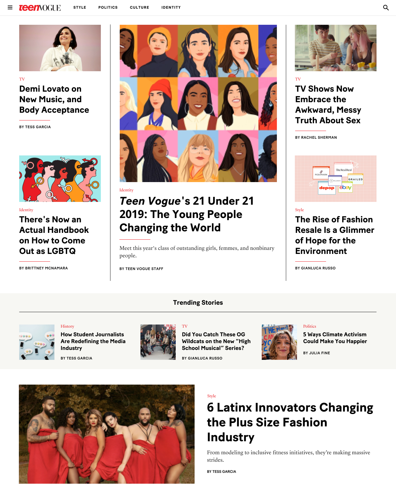
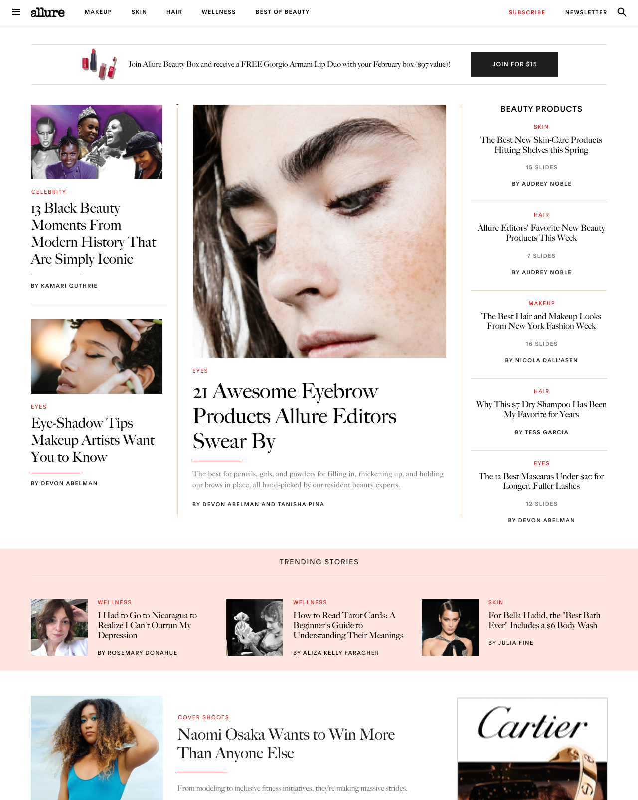
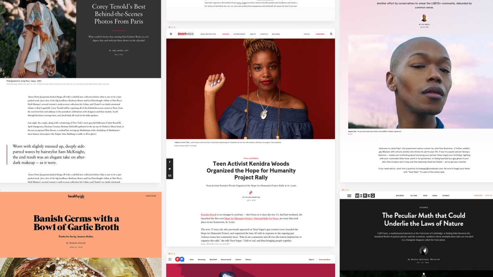
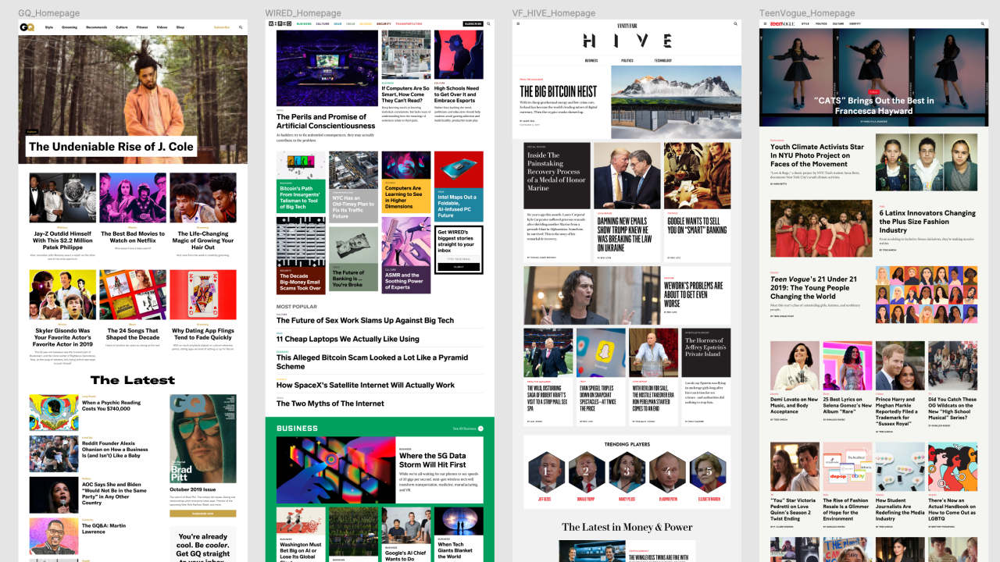

Condé Nast’s universal multi-brand design system & architecture
Lead Designer, Verso Homepages
- Designed all components (40+ patterns with 150+ variations in total) for all discovery functionality (homepages, tag pages, search results pages, recirculation, etc.)
- Architected customization for each component per brand (e.g. styling configurations, responsive behavior, aspect ratios)
- Established the system for how to operate it in the back-end CMS in a few interactions

Designed preliminary set of baseline patterns.

Combined patterns to create more complex higher-order compositions. Added responsive behavior and default aspect ratios which can be overriden per brand.

Combined patterns and compositions to create homepage templates. Added universal ad map, sponsored post cadence, and introduced CMS logic to create flexible homepages in the back-end—a layout and curation ability that wasn't previously possible.
Live example for Teen Vogue.
Live example for Allure.
Team Lead, Verso Design System
- Led strategy & operations for all system-wide and brand-specific design work. Accountable for 1) design success, and 2) team execution and morale.
- Key decision-maker for the design org partnering with product and engineering directors on where and how to deploy resources.
- Major partner with other stakeholders outside tech organization (editors, brand leads, marketing, biz dev, sales, etc.) who has an interest on the use and improvement of the system.
- Managed delivery from creating tickets to design to deployment.

Deliverable: Scale system to all brands.

Deliverable: Maximize reusability of design and code onto new functionality and business needs.
Deliverable: Design new concepts and possibilities to maintain spirit of inventiveness through a systems-based thinking.